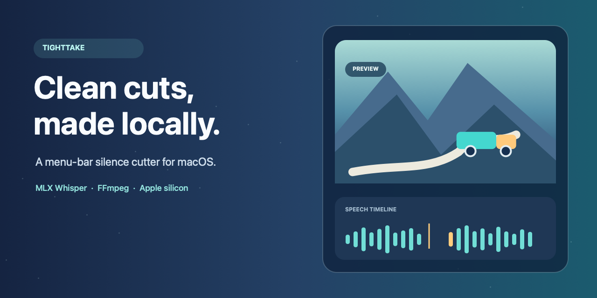

Your footage stays yours
Transcription and editing run on your Mac. The app does not upload your video or transcript; MLX Whisper may download its model the first time you use it.
A local-first video tool
TightTake finds long silences and makes a tighter cut—right on your Mac, with your original video left alone.
The downloaded app currently appears in macOS as Video Smart Cut.

Less dead air, more flow
Let local speech recognition find the words. TightTake keeps the useful pauses around them and renders a fresh file with FFmpeg.
Transcription and editing run on your Mac. The app does not upload your video or transcript; MLX Whisper may download its model the first time you use it.
Word timestamps preserve a little breathing room, helping the final cut sound less abrupt than a simple silence gate.
Choose the output name and folder. TightTake creates a new MP4 instead of replacing your original video.
A simple workflow
Choose a video, let the tools do the careful work, then save a separate edit.
Open the menu-bar popover and select a clip, or drag an MP4, MOV, M4V, or MKV into it.
MLX Whisper creates local word timestamps; follow transcription, analysis, and render progress as it runs.
Set the output name and folder, then get a new MP4 while your source stays untouched.
An Apple silicon Mac running macOS 14 or later, plus FFmpeg and MLX Whisper. The Whisper model is downloaded on first use.
brew install ffmpeg pipx
pipx install mlx-whisperYour next tighter take
Get v1.3.5 for Apple silicon, or inspect the source and full release notes first.
First-release note: This app is ad-hoc signed and not notarized, so macOS may show a warning or block its first launch. Do not disable Gatekeeper. Review the source on GitHub and continue only if you trust the build.